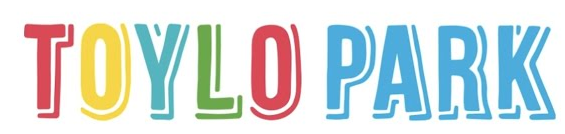

表OCR → CSV
スクリーンショットの表を貼り付けるだけ。データはブラウザ内だけで処理されます
📖 つかいかた
説明書PDF
画像を開く
クリップボードから貼付
OCR実行
全て再認識
CSV保存
コピー
PDF出力
A4 縦
A4 横
空の行・列を除く
仕切り
＋横線
＋縦線
自動分割をやり直す
仕切りを消す
行間の最小幅
2px
列間の最小幅
0.8×
枠指定後に自動OCR
精度
高精度(大・初回のみ待ち)
標準(軽量)
画像を Ctrl/⌘+V で貼り付けてください。
認識結果(クリックで編集)
画像を貼り付けて、右の原画で表の範囲をドラッグしてください。
原画
−
100%
＋
100%
全体
Ctrl
/
⌘
+
V
でスクリーンショットを貼り付け
またはファイルをここにドロップ
ドラッグで表の範囲を指定 / 線をドラッグで移動・ダブルクリックで削除 / ＋横線・＋縦線のあと原画をクリックで追加 / Ctrl+ホイールで拡大縮小